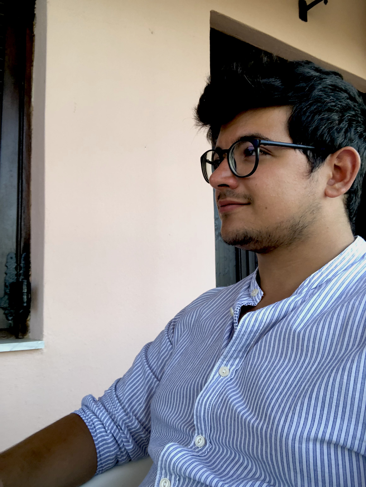

Since September 2023 I am a postdoctoral researcher in the D-Math at ETH Zürich under the supervision of Prof. Joaquim Serra. Before that, I was part of the Department of Mathematical Sciences of University of Bath as a Ph.D. student, under the supervision of Manuel del Pino.
I am mainly interested in Geometric PDEs and Differential Geometry. In particular, I work with minimal surfaces (both local and nonlocal versions) and their relation with the PDE framework. I am also interested in Ginzburg-Landau theory, nonlocal minimal surfaces and harmonic maps (both classical and fractional).
You can find a recent CV here